在 Windows 用 VirtualBox 安裝 Ubuntu
VirtualBox 是 Sun Microsystems 免費讓大家下載使用的虛擬軟體，它可以讓我們在現有已安裝的作業系統底下，以應用程式的方式安裝並運行其它作業系統。例如我在 Windows XP 以 VirtualBox 安裝 Ubuntu 9.04，這樣以後就能在 Windows XP 以應用軟體的方式啟動 Ubuntu 9.04。
VirtualBox 相當容易使用，大致上不用看什麼教學文件就能順利安裝作業系統，而且現在的功能也算很成熟了，像之前我無法在 VirtualBox 安裝的 Linux 上網，最近裝了 2.2.4 版就可以上網了。而且速度還算可以忍受，是目前最簡單好用、執行效率又不錯的免費虛擬軟體。
VirtualBox 官方網站：http://www.virtualbox.org
底下將介紹如何在 VirtualBox 2.2.4 安裝 Ububtu 作業系統！[1]
給初次嘗試 VirtualBox 的人
VirtualBox 在虛擬的時候，鍵盤右邊的 Ctrl 鍵被定義為特殊用途的「Host 鍵」。
Host 鍵是初次接觸 VirtualBox 時首先必須知道的事！它可以完成許多在真實系統與虛擬系統之間搭配溝通的功能。例如你可以按 Host 鍵在 VirtualBox 切換真實作業系統與虛擬作業系統的滑鼠游標、或者按 Host + F 在全螢幕模式與視窗模式之間切換……可以搭配的功能還有很多。
安裝 Ubuntu 作業系統
步驟 1
執行 VirtualBox 後，按「新增」圖示鈕。
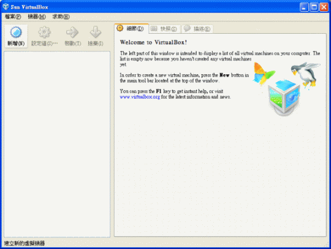
步驟 2
出現「歡迎使用新增虛擬機器精靈」視窗，直接按「Next」鈕。
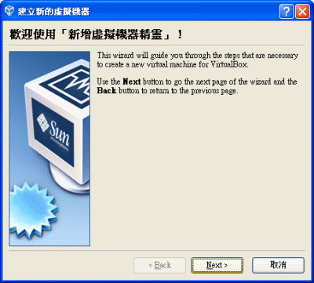
步驟 3
出現「虛擬機器名稱和作業系統類型」視窗，在「名稱」的部份隨便取個名字，例如取為 Ubuntu，在「作業系統類型」的部份，Operating System 選擇「Linux」，Version 選擇「Ubuntu」，然後按「Next」鈕。
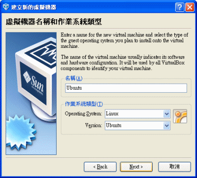
步驟 4
出現「記憶體」視窗，這裡配置的記憶體其實是硬碟空間產生的虛擬記憶體，而不是實體記憶體。建議調整為 512MB，然後按「Next」鈕。
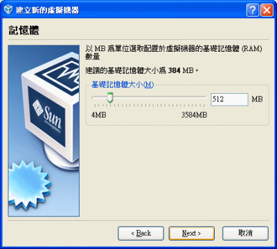
步驟 5
出現「虛擬硬碟」視窗，先確認是否勾選「Boot Hard Disk (Primary Master)」，接著請圈選「Use existing hard disk」，然後按 圖示按鈕。
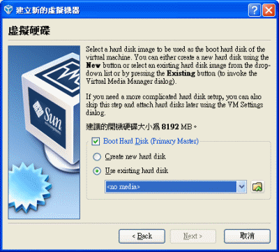
這裡所要製作的硬碟其實是個檔案，所以不會對實際硬碟的格式造成影響，可以避免原先的資料遭到破壞，所以第一次安裝 Linux 的人，選擇在 VirtualBox 當作練習，算是安全的做法。
步驟 6
出現「Virtual Media Manager」視窗，請在「Hard Disks」頁籤，按「New」圖示鈕。
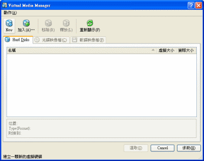
步驟 7
出現「歡迎使用建立新的虛擬磁碟精靈」視窗，直接按「Next」鈕。
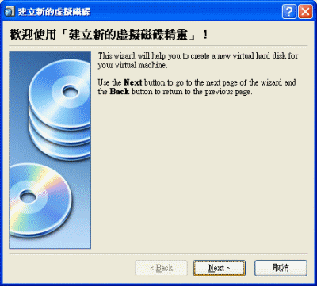
步驟 8
出現「Hard Disk Storage Type」視窗，請圈選「Dynamically expanding storage」，然後按「Next」鈕。
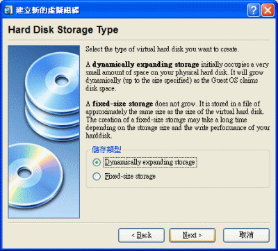
Dynamically expanding storage 會根據虛擬作業系統實際用掉的硬碟容量，自動調整檔案大小。例如剛裝完 Ubuntu 之後，這個虛擬硬碟大概只有 2GB 的檔案大小，隨著你在虛擬的 Ubuntu 加裝各式各樣的應用軟體後，它才會越來越大。
步驟 9
出現「虛擬磁碟位置和大小」的視窗。
你可以在「Location」的部份，利用 圖示按鈕指定存放虛擬磁碟這個檔案的路徑，如果你不指定的話，預設會將這個檔案放在下列路徑：
硬碟代號:\Documents and Settings\[使用者帳戶]\.VirtualBox\HardDisks
每個人檔案管理習慣不同，請自行決定檔案路徑。
接著請在「Size」的部份，調整這個虛擬磁碟最多只能使用多少容量。雖然我個人在示範時使用 10GB 的檔案大小，但由於上個步驟選擇使用 Dynamically expanding storage，用多少算多少，因此這裡就算你使用實體硬碟剩餘的所有容量也無所謂。
完成後按「Next」鈕。
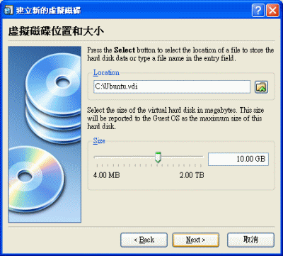
之前選擇了 Dynamically expanding storage 的儲存型態，表示虛擬硬碟的檔案大小用多少就佔用多少，而這裡設定的則是不能超過多少。
步驟 10
出現「概要」視窗，直接按「Finish」鈕。
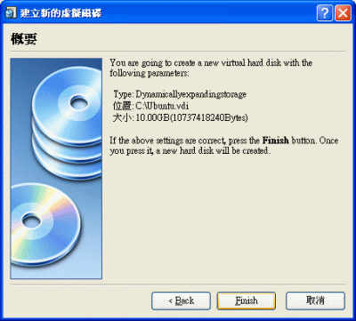
步驟 11
自動跳回「Virtual Media Manager」視窗，會看到裡面出現了 .vid 副檔名的項目，這就是建立的虛擬磁碟。請按「選取」鈕。
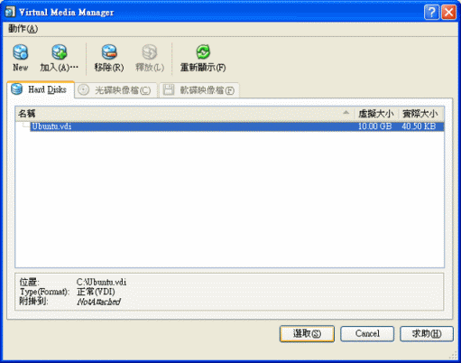
步驟 12
自動跳回「虛擬硬碟」視窗，且之前圈選的「Use existing hard disk」底下自動指向了前面所建立出來的虛擬磁碟檔案。請按「Next」鈕。
步驟 13
出現「概要」視窗，直接按「Finish」鈕。
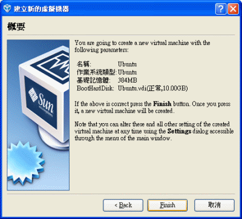
步驟 14
這時自動回到 VirtualBox 的主畫面，成功建立出一台用來安裝 Ubuntu 的虛擬機器了！
接下來請把 Ubuntu 安裝光碟放入光碟機，然後按「啟動」圖示鈕，VirtualBox 就會開始在虛擬的機器「打開電源」，然後經由光碟機裡面的開機光碟進入 Ubuntu 的安裝畫面，一切就像打開電腦灌 Ubuntu 一樣。
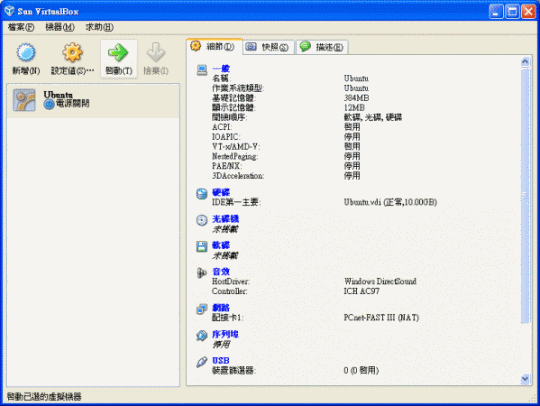
接下來的 Ubuntu 安裝畫面相當間單，大致上不會有什麼問題，這裡就不介紹了。有耐心點就對了！在虛擬機器安裝往往都很慢，祝你安裝成功。
陸續還有……
安裝完 Ubuntu，接下來還需要安裝「客戶端額外功能」，才能讓虛擬的作業系統與真實的作業系統互相聯繫。這部分請參考另一篇文章：在 VirtualBox 裡的 Ubuntu 安裝「客戶端額外功能」。